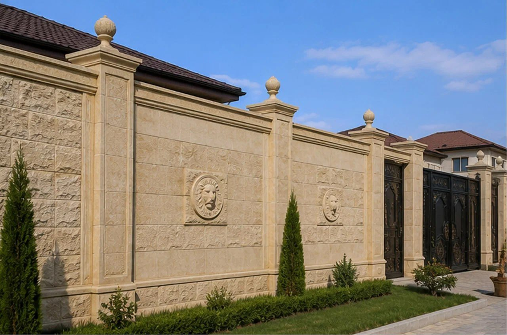

КАМЕНЬ В РЕАЛЬНЫХ ПРОЕКТАХ
Красота,
проверенная временем.
Каждая порода и каждый дом раскрываются по-своему. Вдохновитесь сочетаниями природного камня и архитектуры.
01 — ГАЛЕРЕЯ
Фактура, объём,
характер.
Фотографии фасадов, камня и объектов из галереи компании «РашидСтрой» на Яндекс Картах.



↗
Все фотографии загружены в карточку компании на Яндекс Картах. Перейдите в галерею, чтобы открыть оригиналы.
+7 925 809-09-99ВАШ ДОМ — СЛЕДУЮЩАЯ ИСТОРИЯ
Оставить заявку ↗